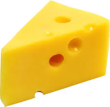

On this website, we will use your patented, world class "algo-rhythm", to decipher just what type of cheese you are. Are you parmesan cheese? Are you Swiss cheese? Could you be my personal favorite, the American cheese? It is an age old question that we all ask ourselves, and if you answer our questions we can finally determine what type of cheese you are! Enjoy this site as much as we enjoy cheese!

Here is a little bit about ourselves. We are a nonprofit organization of cheese lovers based in Davenport, Iowa, that is just north of Southern Davenport Iowa.
We truly believe that the science behind the cheeses can tell us just who we are. My colleagues and I, challenge you to take our survey and find out who you truly are through cheese.
Join us! You won't regret it, but will regret it if you don't!That is not a threat, it's a guarantee! Goodbye!
Sponsored by Jeff Bridges